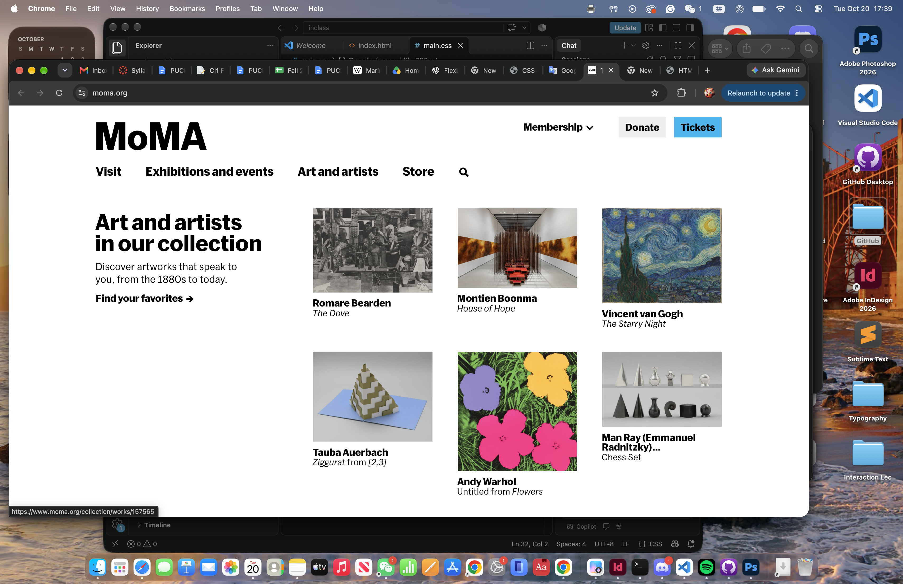

body
div.page
div.wrapper
header#header
div.logo
nav.main-navigation
div.header-tools
div.hero-image
div.hero-text
div.section-header
div.exhibition-grid
div.collection-header
div.artwork-grid
div.visit-information
div.footer-navigation
div.social-media
div.copyright
The MoMA site has a distinct structure of its content organization. The `body` element includes all page content, whereas `div.page` and `div.wrapper` include main elements of the web-site. The `header#header` includes MoMA logo, main navigation and header tools that allow users to navigate through various parts of the website. The `div.hero-image` and `div.hero-text` elements are used to emphasize the most significant exhibitions. While large images are eye-catching, text explains the details of the artworks. The `div.exhibition-grid` and `div.artwork-grid` arrange exhibitions and artworks in columns. Thus, visitors can easily explore the offered content. Various elements such as `div.section-header` and `div.collection-header` separate various sections and form hierarchy. On the lower part of the website, there are the following elements: `div.footer-navigation`, `div.social-media` and `div.copyright`. In general, MoMA employs a neat layout, strong typography, large images and grid.